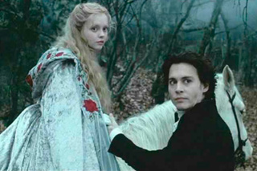
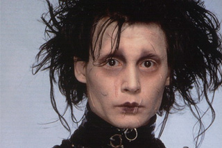

Фирменный стиль
Готическая палитра (чёрный, белый, фиолетовый), спирали и диагонали в композиции, вытянутые пропорции и шрифтовая пластика — всё это легко узнаваемо.
Технически ему близки практические эффекты, кукольная анимация, миниатюры и «осязаемые» декорации.
В центре герой-аутсайдер: странный, добрый и немного пугающий. Конфликт с обществом раскрывает тему принятия себя.